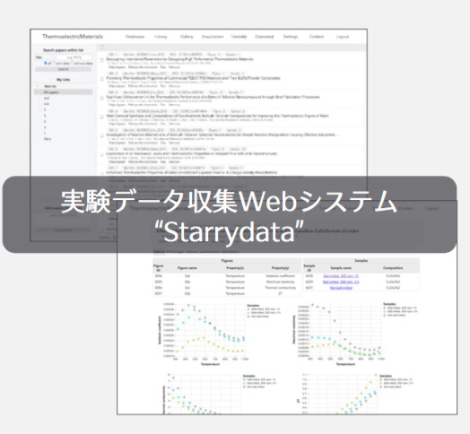
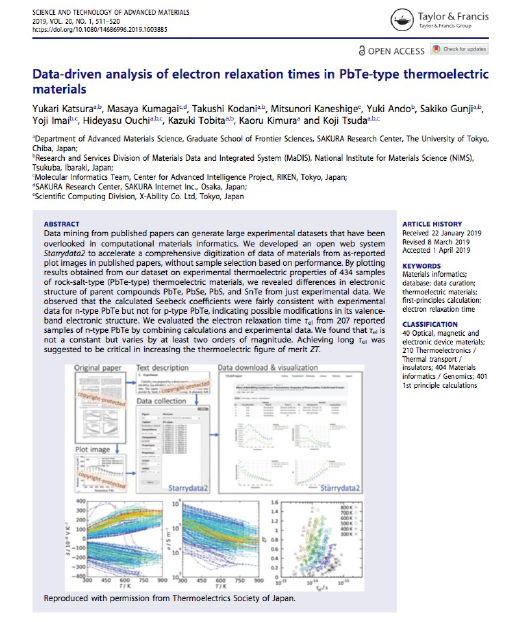

☆プロジェクトの歩み
Step1／2015.07：MI2Iプロジェクトスタート
Starrydata誕生のきっかけとなったのは、2015年7月に始まったMI2Iプロジェクトでした。これは、日本におけるMaterials Informatics（MI）の活性化を目的に、日本全国の材料科学者や情報科学者を集めたオールジャパン体制でMI分野の開拓をめざす巨大プロジェクトでした。東京大学で熱電材料の研究に携わっていた桂は、プロジェクトの初期メンバーとして熱電材料に関する第一原理計算に携わることになりました。ところが、そのような計算はアメリカの研究チームが2000物質を対象に既に行っていて、その結果をデータベースとして無償公開していました。計算結果がデータベース化されたのであれば、次はどんなデータがあれば世界中のMIに役立つのか。この問いかけがStarrydata誕生につながりました。
Step2／2015.08：世界初のMIの研究成果をめざす
MIは、材料工学と情報工学の領域を横断する学際的研究アプローチでした。アメリカチームの第一原理計算がどちらかといえば情報工学からのアプローチだとすれば、材料工学からはどのようなアプローチがありうるのか。
私なりに考え抜いた末の結論、それは「実験データを研究における決定的に重要なピースとして扱う」でした。材料の熱電特性に関する計算データが既にあるなら、それと実験データの比較により、材料に関するより深い理解が可能になるはずです。計算データと実験データの融合こそがMIのあるべき姿、だとすれば欠けているのは実験データです。
では、実験データはどこにあるのか。実は研究者ならすぐ手の届くところにある。これまでに発表された論文中のグラフに膨大なデータが眠っているのだから、これを掘り起こしてデータベース化すれば、MIとして世界初の研究成果となります。
ただアイデアはよしとしても、その実現には独力で取り組めるはずもありません。何万本もある論文を集めて読み込み、埋め込まれているグラフの意味を理解した上で、データを抽出する。アイデアを実現するために必要な気の遠くなるような作業に、共に取り組んでくれる仲間を見つけなければならない。次の課題が明らかになりました。
Step3／2015.10：共同開発者との出会い
論文からグラフを見つけてデータを収集する。一連の作業を完全に自動化するのは不可能です。けれども、手作業で行う部分をアプリでサポートできれば、データ収集は実現可能と考えました。ただ私自身のプログラム開発能力には限界があります。
そこで情報系の研究者や材料データベースの研究者を探して、アイデアを実現するにはどうすればよいかと、とにかく質問していきました。メールを出してアポが取れれば会って意見を求めました。
面談を重ねていくうちに、データベース作成やそレに関する研究の難しさがわかってきました。同時にこのテーマに共同研究として取り組んでくれる余裕のある研究者は、まず見つからないだろうと思うようにもなりました。
共同研究が難しいなら、データベース開発に一緒に取り組んでくれる人はいないのか。そう方針転換したとき、実は意外なほど近くに適任者がいたのです。その人物、後に開発パートナーとなる当時は大阪大学博士後期課程2年だった熊谷将也とは、7月にドイツで行われた学会で知り合っていました。熊谷は、私と同じく熱電材料の研究に取り組むと同時に、高専時代に学んだ情報工学にも強い関心を持っていたのです。
早速、企画書をつくって熊谷に渡し、共同研究に誘いました。翌日「できそうだ」と返事をもらうと共に「ローカルのアプリよりもWebシステムとして構築したほうがいい」と今後の方向性も指摘されました。
Step4／2015.12：データ収集コミュニティ設立
データベース作成に際しては、日本熱電学会の研究者ネットワークを使わせてもらおうと考えました。そこで学会会長を務めておられた河本邦仁先生に相談したところ、ワーキンググループを作ってはどうかと提案いただきました。早速10人の先生方を集めて提案書をまとめ、理事会で正式に「日本熱電学会 熱電特性データベースWG」設立を許可いただきました。
理事会での検討課題となったのが資金調達です。データベース作成に必要な資金をどのように賄うのか、またデータベースから熱電学会会員の利益を得る方法などについての議論が重ねられました。一例をあげれば、データベース使用に際してライセンス料を徴収し、それで維持する方法や、データベースへのアクセスを熱電学会の会員だけに絞り込む案などを検討しています。
ただデータベースを有効活用してもらうためには、その作成はもとより使用に際しても、とにかく「面倒くさくない」のが望ましく、理想は「無償・オープン」のデータベースとしての提供です。これを実現するため、運営は私が獲得する競争的研究費で賄い、熱電学会からは人のネットワークだけをお借りする形での運営が決まりました。

※『材料工学に基づいた新しいWebシステム設計・管理アプローチ〜私の学際的研究〜』熊谷将也より
2015年12月にWGの設立許可が下りたので、プロジェクト紹介のプレゼンを行いました。翌2016年3月には、第一原理計算部門も巻き込んだ「計算＆データ研究会」を2日間の日程で開催しました。4月以降は、大阪（大阪大学）、つくば（NIMS）、名古屋（豊田工業大学）、仙台（東北大学）、奈良（奈良先端科学技術大学院大学）、福岡（九州工業大学）と全国を回って説明会を行い、各地の研究者や将来有望な学生たちとのネットワークをつくりました。その結果、最終的にWGには49名が参加し、賛同者は熱電学会全メンバーの約10％に達したのです。
メンバーが固まった段階で、権利関係問題についてのディスカッションを重ね、具体的なデータ収集方法を設計しました。こうして完成した初代のStarrydata webシステム（Starrydata1）は残念ながら、実際に運用を始めると多くの問題点を抱えている実態が明らかになりました。
その結果、後に新たにStarrydata2の開発に取り組む運びとなります。ただWGに参加してくれた学生たちの多くが卒業してしまい、彼らにデータ収集を頼む機会は失われてしまいました。けれども、WGを通して多くの人と意見交換しながらプロジェクトを進められた経験は、極めて有意義なものとなりました。
Step5／2016.07：専属スタッフによるデータ収集開始
WGでのディスカッションにより、明らかになったのは次の2点です。第1は、優秀な研究者や学生ほどこのプロジェクトに興味を持ってくれる傾向がある、そして第2が、ただしそんな人たちほどデータ収集に割いてもらえる時間が少ないという事実です。ではデータ収集を効率的に進めるにはどうすればよいか。データ収集の専属スタッフに依頼するというのが、最終的な結論となりました。
2016年7月、NIMSのMI2Iプロジェクトにデータ収集の専属スタッフが2人、参加してくれる運びとなりました。ただ当時はまだStarrydata1システムで使い勝手が良くなかったため、データ収集も思うようには進みません。最初の1年は、とにかくデータ収集に必要な論文ダウンロードに集中してもらい、最終的に約1万5千本の論文が集まりました。
Starrydata1は、著作権管理やデータ整理、作業ワークフローなどにいくつかの問題を抱えていました。そこで多数の問題を逐次改善するのではなく、ゼロベースでの新たなシステム構築を決断します。これが論文PDFそのものではなく、論文へのリンクのみを扱うStarrydata2 webシステムです。新システム導入により作業の進み具合は格段に良くなり、データ収集のスピードは飛躍的に高まりました。
2017年12月からは、新たに安藤有希さんがデータ収集者として加わり、データ収集が加速します。同時にクラウドソーシング経由でも、数名の方にデータ収集に協力してもらいました。2019年度末にさらに田中敦美さんと坂本吉宏さんがデータ収集の専属スタッフとして加わり、現在の運営体制となっています。
Step6／2019.04：論文アクセプト
Starrydata1の開発を始めてから、関連論文を何度か投稿しました。ところが研究方法自体には科学的な新規性がなかったため、リジェクトされ続けました。人間の手作業によるデータ収集作業をWebアプリに代替して効率化するだけでは、新たなプログラム開発とはいえず、もとより材料科学に関する新たな発見があるわけでもありません。論文として認められるのが難しいのはよくわかります。
それでも2019年4月、ついに1本の論文がアクセプトされます。『Science and Technology of Advanced Materials （STAM）』誌に、PbTe系熱電材料について第一原理計算と大規模実験データを合わせて行った解析結果を載せました。この論文の序盤で、データ収集法としてStarrydata webシステムを紹介したのです。すると世界の熱電材料研究の第一人者G. J. Snyder先生が、最初に論文を引用してくれました。

※『Science and Technology of Advanced Materials』に掲載された論文
同年7月には、共同開発者の熊谷が、国際熱電学会（ICT2019）でポスター発表を行い、優秀ポスター賞を受賞しました。熊谷の研究内容は、、日本熱電学会（TSJ2019）でも評価され、優秀ポスター賞を受賞しています。プロジェクトリーダーの私も、日本熱電学会から進歩賞をいただきました。
Step7／2019～：共同研究開始、さらに外部資金獲得へ
Starrydata2 webシステムの認知が高まるにつれ、このシステムを使った共同研究プロジェクトが相次いで立ち上がりました。例えば、韓国KERIとの共同研究では、熱電変換モジュールの効率を厳密に計算するためにStarrydataが使われています。国内の企業から寄付金をいただき、その寄付金でデータ収集者を新規採用してのデータ収集も始まりました。またアメリカで最先端のMIを行うチームとも、共同研究を行っています。
一方ではStarrydataプロジェクトの独自性が認められ、競争的研究費の獲得機会も増えてきました。2019年4月には、AICE（自動車用内燃機関技術協同組合）のプロジェクト研究として、熱電材料のMaterials Informaticsが採択されました。2019年10月には、桂を研究代表者とした大型共同研究プロジェクト（JST-CREST）が採択されたほか、科学研究費補助金などでもプロジェクトの支援をいただいております。
その後、Starrydataプロジェクトは、共同研究者らの希望に応じてデータ収集の対象を熱電材料から磁石材料や準結晶と広げていき、現時点で7分野カバーしています。データ収集分野は今後も増やしていく予定で、ゆくゆくは、材料科学全体をカバーするデータベース構築を目指しています。